Using StarUML to Generate ActionScript 3.0
StarUML is a free,
Windows-based UML tool
used for creating diagrams related to application design.
There are many different kinds of diagrams that UML support, but our focus
here will be on Class Diagrams.
Class diagrams represent the structure of a collection of classes by showing
both how they're defined (inheritance hierarchy) and how they relate to one
another (associations).
By creating a class diagram before you even begin writing a single line of
code, you can place focus on one of the more important aspects of an application,
it's interface and design. Once you have that defined, implementation becomes
a lot simpler and smoother to incorporate. Additionally, UML can be used
to create class skeleton files for you. Most UML tools, including StarUML,
support an export to a programming language's source code.
StarUML can export to a number of different programming languages out of the
box but does not support ActionScript natively. Instead, a custom export
script is required to supply that functionality. This tutorial will cover
the use of StarUML to export UML class diagrams to ActionScript 3.0
source code using a custom export script.
Using the ActionScript 3.0 Export
Installation
Export the ActionScript 3.0 folder into:
<StarUML install>\modules\staruml-generator\templates
which with a standard Windows installation would be:
C:\Program Files\StarUML\modules\staruml-generator\templates
The ActionScript 3.0 folder contains two files: template description.tdf,
a description file providing basic information specific to the export, and
template.cot, the template script used to generate the source code.
This should result in the following file locations:
C:\Program Files\StarUML\modules\staruml-generator\templates\ActionScript
3.0\template description.tdf
C:\Program Files\StarUML\modules\staruml-generator\templates\ActionScript
3.0\template.cot
With these files in place, StarUML will be able to recognize the ActionScript
3.0 export as a valid export option; no restart is required.
Use
Once you've installed the necessary template files, you access
the export your UML to ActionScript 3.0 through the StarUML Generator dialog.
To open this dialog, use:
Tools > StarUML Generator….
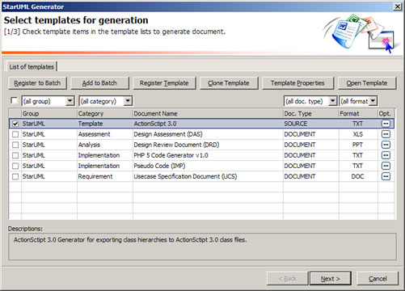
This dialog reads the available
.tdf files in the templates directory and displays them in a list. The ActionScript
3.0 template should be listed with a Document Name of "ActionScript 3.0".
Check that template and hit Next.
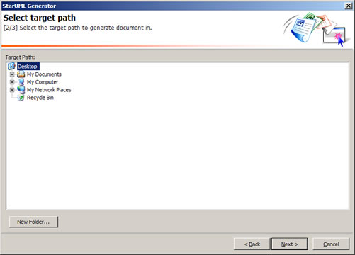
Select the directory you want to export the ActionScript, then hit Next.
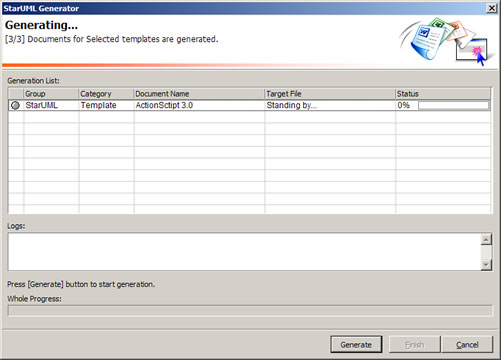
The results screen will open. Click Generate to begin the export and hit Finish
when the export is complete.
UML to ActionScript Translations
The following outlines how UML objects and relationships in StarUML translates
to ActionScript when exported from StarUML using the ActionScript 3.0 export
template. The behavior of many of these translations can be controlled through
preferences.
- Subsystem
Same as Package.
- Package
Packages represent folders within a package hierarchy. When classes are
defined in package or a hierarchy of packages, they will be exported
within that package in a folder hierarchy that matches the package
hierarchy.
- Class
UML classes are exported as ActionScript class files. The classes are named
based on the name provided for the UML class. Class attributes in
classes relate directly to ActionScript class member variables. Operations
relate directly to ActionScript class methods. If an operation
is defined with the same name as the class itself, that operation
represents the class's constructor.
| 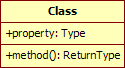 |
package {
public class Class {
public var property:Type;
public function Class() {
}
public function method():ReturnType {
return null;
}
} // end class
} // end package |
- Interface
UML interfaces are exported as ActionScript interface files. The interfaces
are named based on the name provided for the UML interface.
| 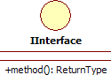 |
package {
public interface IInterface {
function method():ReturnType;
} // end interface
} // end package |
- Enumeration
Same as Class.
- Signal
Much like a class but with additional characteristics and preferences that
relate specifically to Event classes. A default export of a Signal
will include additional source code specific to events.
| 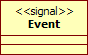 |
package {
import flash.events.Event;
public class Event extends Event {
public function Event(type:String, bubbles:Boolean = false,
cancelable:Boolean = false) {
super(type, bubbles, cancelable);
}
public override function clone():Event {
return new Event(type, bubbles, cancelable);
}
public override function toString():String {
return formatToString("Event", "type", "bubbles",
"cancelable", "eventPhase");
}
} // end class
} // end package |
- Exception
Much like a class but with additional characteristics and preferences that
relate specifically to Error classes.
| 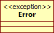 |
package {
public class Error extends Error {
public function Error(message:String = "", id:int = 0) {
super(message, id);
}
} // end class
} // end package |
- Port
No action.
- Part
No action.
- Association
Associations correspond to class attributes that are of a type also
defined in the UML. These attributes are not listed in the class's attribute
list but are instead identified through an association connector.
If the connector is navigable in only one direction, only the originating
class will have an attribute defined based on the association, otherwise
both classes do. Attributes are named after the name provided on
the end of the association. If no name is provided, a default name
will be given based off of the name of the associated class. If the
end's multiplicity is greater than 1, the type of the attribute generated
will automatically become Array.
| 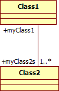 |
package {
public class Class1 {
public var myClass2s:Array = [];
public function Class1() {
}
} // end class
} // end package
package {
public class Class2 {
public var myClass1:Class1;
public function Class2() {
}
} // end class
} // end package |
- Directed Association
Same as Association.
- Aggregation
Same as Association.
- Composition
Much like associations but classes with composed instances can have instances
of their composed classes created automatically.
| 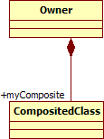 |
package {
public class Owner {
public var myComposite:CompositedClass = new CompositedClass();
public function Owner() {
}
} // end class
} // end package
package {
public class CompositedClass {
public var owner:Owner;
public function CompositedClass() {
}
} // end class
} // end package |
- Generalization
Indicates inheritance. When one class generalizes another class, that
class will extend the class to which the generalization is directed.
| 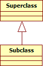 |
package {
public class Superclass {
public function Superclass() {
}
} // end class
} // end package
package {
public class Subclass extends Superclass {
public function Subclass() {
}
} // end class
} // end package |
- Dependency
No action.
- Realization
Indicates an interface implementation. When one class realizes an interface,
that class will implement the interface to which the realization
is directed.
| 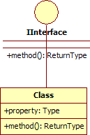 |
package {
public interface IInterface {
function method():ReturnType;
} // end interface
} // end package
package {
public class Class implements IInterface {
public var property:Type;
public function Class() {
}
public function method():ReturnType {
return null;
}
} // end class
} // end package |
- Association Class
No action.
- Connector
No action.
- Object
No action.
- Link
No action.
Preferences
The ActionScript 3.0 export template includes a number of user-definable preferences
that help determine what is exported and how. You can access these preferences
in the StarUML Generator dialog.
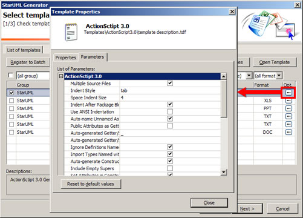
The preferences specific to the ActionScript 3.0 export template include:
- Multiple Source Files
- checked: [Default] Creates a separate file for each source file. The directory
structure will be based on the package location of each definition. If a folder
matching the package path does not exist, one is created.
unchecked: Places all source code in the default output file. The name of this
file will be output.log unless changed within the Template Properties dialog
in StarUML.
- Indent Style
- tab: [Default] Indents using the tab character.
space: Indents using space characters. The number of spaces
used is determined by Space Indent Size.
- Space Indent Size
- [Any Number]: [Default = 4] When Indent Style is
set to "space",
this number determines the number of spaces to use for indention.
- Indent After Package Block
- checked: [Default] Indents the definition block following
the package block.
unchecked: Does not indent the definition block. Some styles
prefer not indenting this block.
- Use ANSI Indentation
- checked: Uses ANSI-style indention which places opening brackets ({) on a new
line starting at the same column as the previous.
unchecked: [Default] Uses Kernel Normal Form indention style
where opening brackets ({) are placed at the end of a line.
- Auto-name Unnamed Associations
- checked: [Default] Automatically create and name properties for associations
without names. Names will simply become their types with a lowercase first letter.
For example, if an unnamed association references a Loader class, the name of
the member variable in the class on the other end of the association will be "loader".
unchecked: Unnamed associations will be ignored and no variable
will be created.
- Public Attributes as Getter/Setters
- checked: [Default] Converts public attributes into a getter/setter
pair of that name which return and set a private version of that variable.
The name of the private variable is based off of the Auto-generated Getter/Setter
Prefix and Auto-generated Getter/Setter Suffix preferences.
It is often considered good programming practice to avoid public member
variables.
unchecked: Public attributes are defined as public member variables.
- Auto-generated Getter/Setter Prefix
- [Any String]: [Default = "_"] Determines a prefix
for a generated, private member variable that is being used with getter/setter
functions defined when Public Attributes as Getter/Setters is checked.
- Auto-generated Getter/Setter Suffix
- [Any String]: [Default = ""] Determines a suffix
for a generated, private member variable that is being used with getter/setter
functions defined when Public Attributes as Getter/Setters is checked.
- Ignore Definitions Named with Package
- checked: [Default] If a class or other definition is given
a name with a package path or otherwise contains a period (.), it will
not be included in the source export. This allows you to specify native
classes in UML (i.e. flash.display.MovieClip) and not have those classes
exported with your custom classes. Note: for top level classes like Object
or Array, just add a period to the beginning of the class name, e.g.
.Object and .Array.
unchecked: Classes with periods in their names will be exported.
Their names will be resolved as package paths.
- Import Types Named with Package
- checked: [Default] If the text specifying a type for an
attribute or operator contains a package path or otherwise contains a
period (.), the type will resolve to its class name only and an import for
its class will be added to the top of the class file.
unchecked: Types with periods will not be modified in the source
code. No imports will be included.
- Auto-generate Constructors
- checked: [Default] Creates constructors automatically if a constructor is not
specified as an operation. If an operation has the same name as it's class name,
it is considered a constructor.
unchecked: Will not create constructors automatically if not
defined operation. This usually isn't a problem unless a superclass requires
constructor arguments at which point a constructor is required to call super()
with those arguments.
- Include Empty Supers
- checked: Includes calls to super() in constructors even when there are no parameters
for super. This can be considered superfluous given that it will be automatically
added if not present, but some prefer their use.
unchecked: [Default] Calls to super() are not added to constructors if super
requires no parameters. If a call to super does require parameters (the super
class constructor requires parameters), that will be added.
- Set Attributes in Constructors
- checked: [Default] Compares the attributes defined within
the class and the parameters passed into the constructor. If a constructor
parameter's name matches a class attribute, a definition is set within
the constructor to set the class attribute to the value of the parameter
argument. To prevent naming conflicts, Set Attributes Prefix and Set
Attributes Suffix is used.
unchecked: Attributes are not set in constructors.
- Set Attributes Prefix
- [Any String]: [Default = "this."] Determines
a prefix for a class attribute that is being set to a constructor parameter
as a result of the Set Attributes in Constructors preference. This
will usually either be "this." or match Auto-generated Getter/Setter
Prefix. This is necessary since Set Attributes in Constructors relies
on parameters and attributes of the same name. Without some sort of distinction
between the two, a parameter might just end up setting itself to itself
rather than the class's member variable.
- Set Attributes Suffix
- [Any String]: [Default = ""] Determines
a suffix for a class attribute that is being set to a constructor parameter
as a result of the Set Attributes in Constructors preference. This
will usually match Auto-generated Getter/Setter
suffix.
- Auto-instantiate Compositions
- checked: [Default] Composition association members are
instantiated in the class. When defined, parameter names are used in
composition class instantiations match that class's constructor parameters.
It is likely you will need to modify these further given that instances
are created in the class body along with variable declarations.
unchecked: Composite association members are not automatically
instantiated.
- Auto-generate Methods from Interfaces
- checked: [Default] Automatically creates method declarations in classes if missing
in the operation list but required by an interface in which the class implements.
unchecked: Will not automatically create methods for you requiring
that you implement them yourself in order to make the class compile. In some
cases using false may be necessary if you are inheriting from a class that is
not defined in the UML that provides the necessary implementation. The export
script will not be able to determine that your class will have access to that
implementation making methods that would need to be deleted.
- Signals Extend Event
- checked: [Default] Any Signal class in UML that does not
directly extend (through a Generalization) another class will automatically
extend flash.events.Event.
unchecked: Signals without superclasses will not extend anything.
- Include Event clone
- checked: [Default] Automatically includes a clone method
in Event classes.
unchecked: No clone method is included.
- Include Event toString
- checked: [Default] Automatically includes a toString method
in Event classes.
unchecked: No toString method is included.
- Raisers Extend EventDispatcher
- checked: [Default] Any class that has an operation that
raises a non-exception signal and does not directly extend (through a
Generalization) another class will automatically extend flash.events.EventDispatcher.
unchecked: Classes without superclasses that raise signals
will not extend anything.
- Raisers Include dispatchEvent
- checked: [Default] Adds a call to dispatchEvent in operations
that raise Signal (Event) objects.
unchecked: No dispatchEvent call is included.
- Include Event Metadata
- checked: [Default] Automatically includes an Event metadata
tag for the class for raised events. The event type specified is the name of
the Signal class with a lowercase first letter.
unchecked: Event metadata is not included.
- Event Metadata Style
- flash: [Default] If Include Event Metadata is
true, the metadata added is in the form of
[Event("<name>")].
flex: If Include Event Metadata is true, the metadata
added is in the form of [Event(name="<name>", type="<type>")].
- Exceptions Extend Error
- checked: [Default] Any Exception class in UML that does
not directly extend (through a Generalization) another class will automatically
extend Error.
unchecked: Exceptions without superclasses will not extend
anything.
- Raisers Include throw
- checked: [Default] Adds a throw statement in operations
that raise Exceptions (Error) objects.
unchecked: No throw statement is included.
If at any time you want to change the defaults for these values, you can do
so from the StarUML Generator dialog by pressing the Template Properties
button.
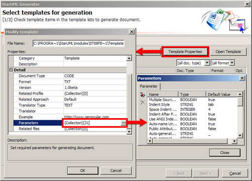
Export Results
When an export is completed, the results of that export are placed in a file
named output.log (the name of this file can be changed in the template
preferences). If the preference Multiple
Source Files is unchecked, it will also contain all the source code generated
from the UML.
Results include what objects were traversed in the UML structure for source
code consideration and whether or not source code was produced. If produced,
any warnings or errors that occurred are also listed. It would be common
to see warnings, but errors should not occur and would usually imply a bug in
the export template. An example results log might include something like
the following:
com: No output.
domain: No output.
Generating source code code for com.domain.Bars...
Source code for com.domain.Bars successfully created!
Generating source code code for com.domain.Car...
WARNING: Unnamed association of type Engine found; creating default variable name.
WARNING: Unimplemented interface method drive; auto-generating.
WARNING: Return type not found for brake; assuming void.
Source code for com.stuff.Car successfully created!
Warnings
Many warnings can be prevented with the correct definitions in UML. Other
warnings, however, simply indicate that action must be taken to make the
generated code usable. These are specific to certain preferences. For example,
with Auto-instantiate Compositions checked, no assumptions are made
as to what values are being used for the constructor parameters of the new
instances. This creates a warning because the code may need to be edited
to include the appropriate values.
The list of possible warnings are as follows:
- Unnamed association of type [TYPE] found; (creating default variable name
| ignoring).
- This means an association connected one class to another but no name was
provided for that association. If Auto-name Unnamed Associations is
checked, a default name will be created for you. If unchecked, the association
will be ignored.
- Return type not found for [OPERATION]; assuming void.
- If you do not define a return type in the parameters list of an operation,
this warning will be issued. Operations without return types will generate
methods whose return types are void.
- Unimplemented interface method [OPERATION]; (auto-generating | you will
need to define this method yourself).
- Indicates an interface was being implemented by a class which did not implement
all required methods defined within that interface. When Auto-generate
Methods from Interfaces is
checked, these methods will be automatically generated. Otherwise the
warning will indicate that you will need to do this yourself.
- No constructor available for [CLASS] when a call to super with
arguments is required.
- This warning occurs if a class inherits from another class with required
constructor parameters and no constructor was available to call super
with arguments for those parameters. This circumstance will only occur
when Auto-generate Constructors is unchecked.
Example
Download this Gallery example to test the ActionScript 3.0 export from StarUML.
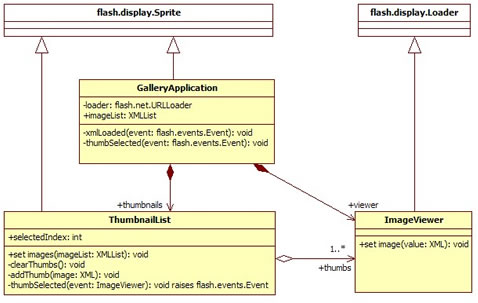
When exported from StarUML with the default preferences, the following classes
are generated:
package com.example {
import flash.display.Sprite;
import flash.net.URLLoader;
import flash.events.Event;
/**
* This is my Gallery class. It represents the document
* class for my gallery SWF which will show pictures
* from my vacation. Click on various thumbnails to
* see a bigger view of the image
*/
public class GalleryApplication extends Sprite {
private var loader:URLLoader;
public var imageList:XMLList;
public var thumbnails:ThumbnailList = new ThumbnailList();
public var viewer:ImageViewer = new ImageViewer();
public function GalleryApplication() {
}
private function xmlLoaded(event:Event):void {
}
private function thumbSelected(event:Event):void {
}
} // end class
} // end package
package com.example {
import flash.display.Loader;
public class ImageViewer extends Loader {
public function ImageViewer() {
}
public function set image(value:XML):void {
}
} // end class
} // end package
package com.example {
import flash.display.Sprite;
import flash.events.Event;
[Event("event")]
public class ThumbnailList extends Sprite {
public var selectedIndex:int;
public var thumbs:Array = [];
public function ThumbnailList() {
}
public function set images(imageList:XMLList):void {
}
private function thumbSelected(event:ImageViewer):void {
dispatchEvent(new Event(type));
}
} // end class
} // end package
You'll notice that the flash.display.Sprite and flash.display.Loader
classes were not exported to ActionScript. Naturally you wouldn't expect
files generated for these classes since they are native Flash Player classes.
But how does the export know not to? It uses their names. Because the class
names are defined with their full package paths, those classes are omitted
from the export. This is governed through the Ignore Definitions Named
with Package preference.